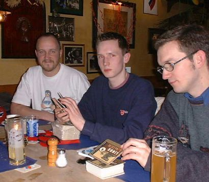
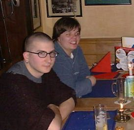

Treffen im Januar 2001 in Duisburg
Unser erstes Treffen
Unser 1. Treffen war am Donnerstag, den 18.01.2001 in
Duisburg. Wir haben uns um 18:00 Uhr im Websters getroffen.
Mit Arne (+ Anhang), Daniel, DJ, Thomas und Regina waren ein großer Teil der Mitglieder der niederrhein.pm anwesend.
| DJ, Daniel, Thomas |
 |
|  |
Arne, Regina |
DJ hat uns Geschenke von der London.pm mitgebracht. Auf dem oberen Bild sieht man die Linux-Lager Bierdeckel, die bestimmt einen Sammler sehr glücklich machen.
Wir haben und kennengelernt, und lecker gegessen. Und weil wir festgestellt haben, daß die Mehrheit derzeit aus Krefeld kommt, haben wir beschlossen, das nächste Treffen in Krefeld zu veranstalten.
|